Weights and Biases Integration¶
# @title Install Packages
# %%capture
try:
import sys, os
from pyprojroot import here
# spyder up to find the root
root = here(project_files=[".here"])
# append to path
sys.path.append(str(root))
except ModuleNotFoundError:
import os
os.system("pip install objax chex")
os.system("pip install git+https://github.com/IPL-UV/rbig_jax.git#egg=rbig_jax")
# jax packages
import itertools
import os
import sys
from argparse import ArgumentParser
from functools import partial
import chex
import jax
import jax.numpy as jnp
import numpy as np
# plot methods
import matplotlib.pyplot as plt
from matplotlib import cm
import seaborn as sns
import corner
%matplotlib inline
sns.reset_defaults()
sns.set_context(context="poster", font_scale=0.7)
# logging
import tqdm
import wandb
from celluloid import Camera
from jax import device_put, random
from jax.config import config
from pyprojroot import here
from sklearn import datasets
from sklearn.preprocessing import StandardScaler
from wandb.sdk import wandb_config
# library functions
from rbig_jax.models.gaussflow import GaussianizationFlow, init_default_gf_model
# import chex
config.update("jax_enable_x64", False)
sns.reset_defaults()
sns.set_context(context="talk", font_scale=0.7)
INFO:tensorflow:Enabling eager execution
INFO:tensorflow:Enabling v2 tensorshape
INFO:tensorflow:Enabling resource variables
INFO:tensorflow:Enabling tensor equality
INFO:tensorflow:Enabling control flow v2
# ==========================
# PARAMETERS
# ==========================
parser = ArgumentParser(
description="2D Data Demo with Iterative Gaussianization method"
)
# ======================
# Dataset
# ======================
from rbig_jax.data import add_dataset_args
parser = add_dataset_args(parser)
# ======================
# Preprocessing
# ======================
parser.add_argument(
"--standardize", type=bool, default=True, help="Standardize Input Training Data"
)
# ======================
# Model
# ======================
from rbig_jax.models.gaussflow import add_gf_model_args
parser = add_gf_model_args(parser)
# ======================
# Model Training
# ======================
from rbig_jax.training.parametric import add_gf_train_args
parser = add_gf_train_args(parser)
# ======================
# Logger Parameters
# ======================
parser.add_argument("--wandb-entity", type=str, default="ipl_uv")
parser.add_argument("--wandb-project", type=str, default="gf_2d_data")
# =====================
# Testing
# =====================
parser.add_argument(
"-sm",
"--smoke-test",
action="store_true",
help="to do a smoke test without logging",
)
_StoreTrueAction(option_strings=['-sm', '--smoke-test'], dest='smoke_test', nargs=0, const=True, default=False, type=None, choices=None, help='to do a smoke test without logging', metavar=None)
# args = parser.parse_args()
args, _ = parser.parse_known_args()
args.dataset = "checkerboard"
args.smoke_test = False
# change this so we don't bug wandb with our BS
if args.smoke_test:
os.environ["WANDB_MODE"] = "dryrun"
args.epochs = 1
args.n_samples = 1_000
# ==========================
# INITIALIZE LOGGER
# ==========================
wandb_logger = wandb.init(project=args.wandb_project, entity=args.wandb_entity)
wandb_logger.config.update(args)
seed = wandb_logger.config.seed
Failed to detect the name of this notebook, you can set it manually with the WANDB_NOTEBOOK_NAME environment variable to enable code saving.
wandb: Currently logged in as: ml4floods (use `wandb login --relogin` to force relogin)
wandb: wandb version 0.10.27 is available! To upgrade, please run:
wandb: $ pip install wandb --upgrade
Tracking run with wandb version 0.10.21
Syncing run toasty-forest-2017 to Weights & Biases (Documentation).
Project page: https://wandb.ai/ipl_uv/gf_2d_data
Run page: https://wandb.ai/ipl_uv/gf_2d_data/runs/3t7f36ft
Run data is saved locally in
Syncing run toasty-forest-2017 to Weights & Biases (Documentation).
Project page: https://wandb.ai/ipl_uv/gf_2d_data
Run page: https://wandb.ai/ipl_uv/gf_2d_data/runs/3t7f36ft
Run data is saved locally in
/home/emmanuel/code/rbig_jax/jupyterbook/content/experimental/plane/wandb/run-20210427_174859-3t7f36ft# ==========================
# LOAD DATA
# ==========================
# get data
n_samples = wandb_logger.config.n_samples
n_features = 2
if wandb_logger.config.dataset in ["noisysine"]:
from rbig_jax.data import NoisySineDataset as PlaneDataset
elif wandb_logger.config.dataset in ["s_curve"]:
from rbig_jax.data import SCurveDataset as PlaneDataset
elif wandb_logger.config.dataset in ["moons"]:
from rbig_jax.data import MoonsDataset as PlaneDataset
elif wandb_logger.config.dataset in ["swiss_roll"]:
from rbig_jax.data import SwissRollDataset as PlaneDataset
elif wandb_logger.config.dataset in ["blobs"]:
from rbig_jax.data import BlobsDataset as PlaneDataset
elif wandb_logger.config.dataset in ["checkerboard"]:
from rbig_jax.data import CheckBoard as PlaneDataset
else:
raise ValueError(f"Unrecognized dataset: {wandb_logger.config.dataset}")
n_train = args.n_train
n_train = 5_000
n_valid = args.n_valid
noise = args.noise
seed = args.seed
# initialize dataset
ds_train = PlaneDataset(n_samples=n_train, noise=noise, seed=seed)
ds_valid = PlaneDataset(n_samples=n_valid, noise=noise, seed=seed + 1)
ds_plot = PlaneDataset(n_samples=1_000_000, noise=noise, seed=seed + 2)
# ==========================
# Train-Test Split
# ==========================
from torch.utils.data import DataLoader
# initialize dataloader
batch_size = 128
shuffle = True
train_dl = DataLoader(
ds_train, batch_size=batch_size, shuffle=shuffle, collate_fn=None, num_workers=0
)
valid_dl = DataLoader(
ds_valid, batch_size=batch_size, shuffle=False, collate_fn=None, num_workers=0
)
# ==========================
# PLOTTING
# ==========================
# plot data
fig = corner.corner(ds_train[:], color="blue", hist_bin_factor=2)
plt.show()
# wandb.log({"original_data": wandb.Image(plt)})
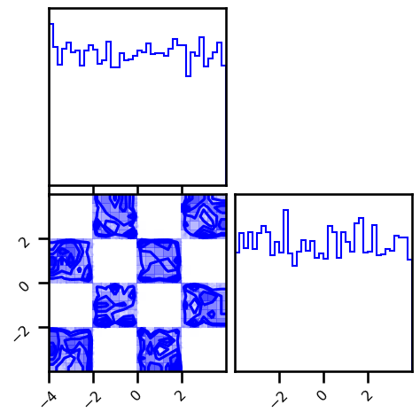
# ==========================
# BUILD MODEL
# ==========================
n_init_samples = args.n_init_samples
n_init_samples = 5_000
if n_init_samples < len(ds_train):
X_init = ds_train[: n_init_samples]
else:
X_init = ds_train[:]
# n_blocks = args.n_blocks
n_blocks = 8
n_components = args.n_components
n_components = 20
n_reflections = args.n_reflections
n_reflections = 2
mixture = args.mixture
mixture = "logistic"
inverse_cdf = args.inverse_cdf
inverse_cdf = "logistic"
init_mixcdf = args.init_mixcdf
init_mixcdf = "kmeans"
# initialize Model
gf_model = init_default_gf_model(
shape=X_init.shape[1:],
X=X_init,
n_blocks=n_blocks,
mixture=mixture,
n_components=args.n_components,
init_mixcdf=init_mixcdf,
inverse_cdf=inverse_cdf,
init_rotation=args.init_rotation,
n_reflections=n_reflections,
plot_layers=False,
plot_blocks=False,
)
WARNING:absl:No GPU/TPU found, falling back to CPU. (Set TF_CPP_MIN_LOG_LEVEL=0 and rerun for more info.)
Initializing - Block: 10 | Layer 29: 100%|██████████| 10/10 [00:13<00:00, 1.37s/it]
X_g = ds_train[:].copy()
for ibijector in gf_model.bijectors:
X_g = ibijector.forward(X_g)
if ibijector.name == "HouseHolder":
fig = corner.corner(np.array(X_g), color="red", hist_bin_factor=2)
plt.show()
plt.close("all")
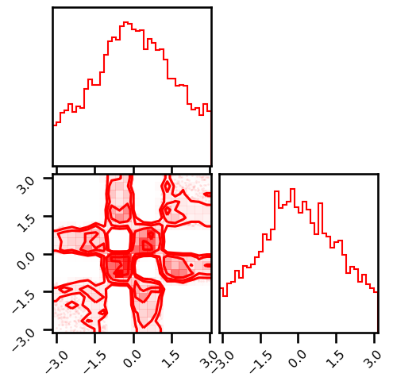
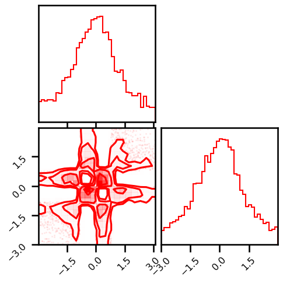
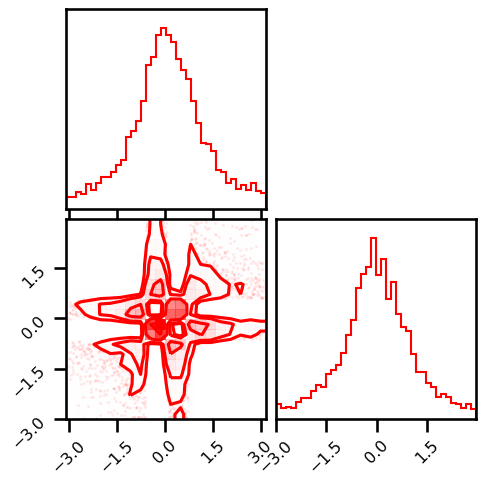
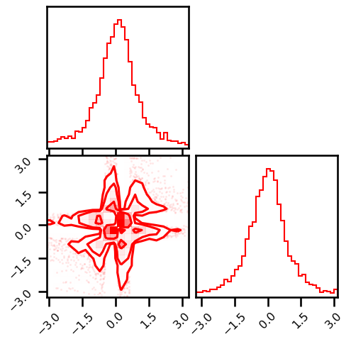
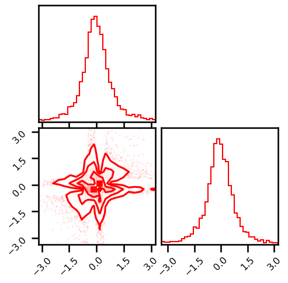
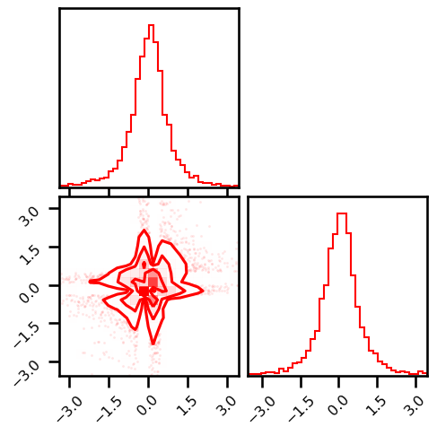
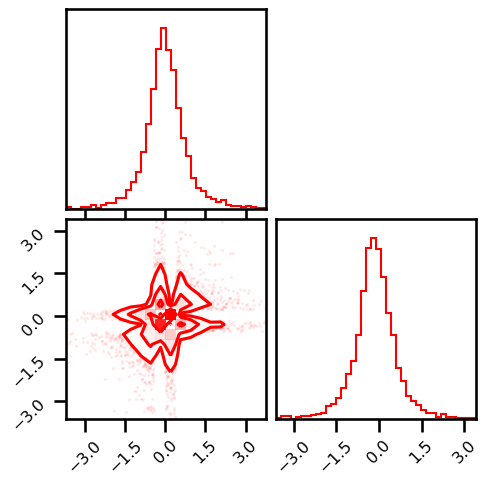
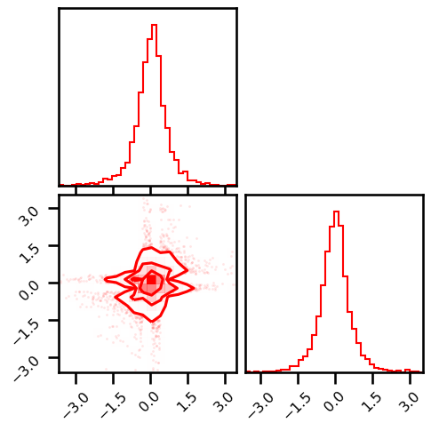
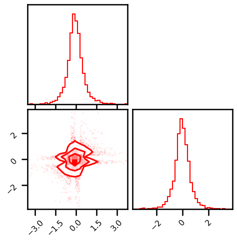

# ==========================
# PLOTTING
# ==========================
Z = gf_model.forward(X_init)
fig = corner.corner(Z, color="red", hist_bin_factor=2)
# wandb.log({"initial_latent": wandb.Image(plt)})
plt.show()
plt.close('all')
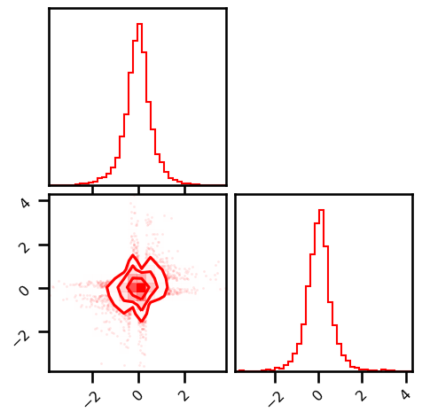
# ==========================
# TRAINING
# ==========================
from jax.experimental import optimizers
lr = args.lr
lr = 0.05
import optax
schedule_fn = optax.cosine_onecycle_schedule(transition_steps=30, peak_value=1_000, pct_start=0.3)
opt_init, opt_update = optax.chain(
# Set the parameters of Adam. Note the learning_rate is not here.
optax.scale_by_adam(b1=0.9, b2=0.999, eps=1e-8),
optax.scale_by_schedule(schedule_fn),
# Put a minus sign to *minimise* the loss.
# optax.scale(-lr),
# cosine onecyle schedule
)
# if args.optimizer == "adam":
# optimizer = optimizers.adam(step_size=lr)
# elif args.optimizer == "sgd":
# optimizer = optimizers.adam(step_size=lr)
# else:
# raise ValueError(f"Unrecognized optimizer: {args.optimizer}")
# unpack optimizer params
# opt_init, opt_update, get_params = optimizer
# initialize parameters
opt_state = opt_init(gf_model)
# define loss function
def loss_f(gf_model, inputs):
return gf_model.score(inputs)
# ================================
# Boilerplate Code for Training
# ================================
# # create training loops
# def train_op(i, opt_state, inputs):
# # get the parameters from the state
# params = get_params(opt_state)
# # calculate the loss AND the gradients
# loss, gradients = jax.value_and_grad(loss_f)(params, inputs)
# # return loss AND new opt_state
# return loss, opt_update(i, gradients, opt_state)
def train_op(params, opt_state, inputs):
# Compute gradient and loss.
loss, gradients = jax.value_and_grad(loss_f)(params, inputs)
# Transform the gradients using the optimiser.
updates, opt_state = opt_update(gradients, opt_state, params)
# update parameters
params = optax.apply_updates(params, updates)
return loss, params, opt_state
train_op = jax.jit(train_op)
%%wandb
# ================================
# TRAINING
# ================================
import jax.numpy as jnp
train_losses = list()
valid_losses = list()
itercount = itertools.count()
train_batch_loss = 0.0
valid_batch_loss = 0.0
interval = 5
pbar = tqdm.trange(args.epochs)
with pbar:
for i_epoch in pbar:
# Train
avg_loss = []
for ix in train_dl:
# cast to jax array
ix = jnp.array(ix, dtype=jnp.float32)
# compute loss
loss, gf_model, opt_state = train_op(gf_model, opt_state, ix)
# append batch
wandb.log({"train_loss_batch": float(loss), "epoch": i_epoch})
avg_loss.append(float(loss))
# average loss
train_batch_loss = jnp.mean(jnp.stack(avg_loss))
wandb.log({"train_loss": float(train_batch_loss), "epoch": i_epoch})
# Log losses
train_losses.append(np.array(train_batch_loss))
pbar.set_postfix(
{
"Train Loss": f"{train_batch_loss:.4f}",
"Valid Loss": f"{valid_batch_loss:.4f}",
}
)
if valid_dl is not None:
# final_params = get_params(opt_state)
# Train
avg_loss = []
for ix in valid_dl:
# cast to jax array
ix = jnp.array(ix, dtype=jnp.float32)
# compute loss
loss = gf_model.score(ix)
# append batch
wandb.log({"valid_loss_batch": float(loss), "epoch": i_epoch})
avg_loss.append(float(loss))
# average loss
valid_batch_loss = jnp.mean(jnp.stack(avg_loss))
wandb.log({"valid_loss": float(valid_batch_loss), "epoch": i_epoch})
valid_losses.append(np.array(valid_batch_loss))
pbar.set_postfix(
{
"Train Loss": f"{train_batch_loss:.4f}",
"Valid Loss": f"{valid_batch_loss:.4f}",
}
)
else:
continue
if i_epoch % interval == 0:
X_trans = []
for ix in train_dl:
# cast to jax array
ix = jnp.array(ix, dtype=jnp.float32)
ix = gf_model.forward(ix)
X_trans.append(ix)
X_trans = jnp.concatenate(X_trans, axis=0)
fig = corner.corner(np.array(X_trans), color="Red")
wandb.log({"training_latent_space": wandb.Image(plt), "epoch": i_epoch})
plt.close('all')
0%| | 0/100 [01:32<?, ?it/s, Train Loss=nan, Valid Loss=0.0000]
---------------------------------------------------------------------------
KeyboardInterrupt Traceback (most recent call last)
<ipython-input-15-3e2c44b36550> in <module>
57
58 # compute loss
---> 59 loss = gf_model.score(ix)
60
61 # append batch
~/code/rbig_jax/rbig_jax/models/gaussflow.py in score(self, inputs)
36
37 def score(self, inputs):
---> 38 return -jnp.mean(self.score_samples(inputs))
39
40 def sample(self, seed: int, n_samples: int):
~/code/rbig_jax/rbig_jax/models/gaussflow.py in score_samples(self, inputs)
25
26 # forward propagation
---> 27 z, log_det = self.forward_and_log_det(inputs)
28
29 # calculate latent probability
~/code/rbig_jax/rbig_jax/transforms/base.py in forward_and_log_det(self, inputs)
156 # total_logabsdet = jnp.expand_dims(total_logabsdet, axis=1)
157 for ibijector in self.bijectors:
--> 158 outputs, logabsdet = ibijector.forward_and_log_det(outputs)
159 total_logabsdet += logabsdet # sum_last(logabsdet, ndims=logabsdet.ndim)
160
~/code/rbig_jax/rbig_jax/transforms/parametric/mixture/logistic.py in forward_and_log_det(self, inputs, **kwargs)
27 # )
28
---> 29 outputs = mixture_logistic_cdf(
30 inputs, self.prior_logits, self.means, softplus(self.log_scales),
31 )
~/code/rbig_jax/rbig_jax/transforms/parametric/mixture/logistic.py in mixture_logistic_cdf(x, prior_logits, means, scales)
173
174 # normalize distribution for components, (D,K)->(D,)
--> 175 log_cdf = logsumexp(log_cdfs, axis=-1)
176
177 return jnp.exp(log_cdf)
~/.conda/envs/jax_py38/lib/python3.8/site-packages/jax/_src/scipy/special.py in logsumexp(a, axis, b, keepdims, return_sign)
111 amax_with_dims = amax if keepdims else lax.expand_dims(amax, pos_dims)
112 if b is None:
--> 113 out = lax.add(lax.log(jnp.sum(lax.exp(lax.sub(a, amax_with_dims)),
114 axis=dims, keepdims=keepdims)),
115 amax)
~/.conda/envs/jax_py38/lib/python3.8/site-packages/jax/_src/lax/lax.py in log(x)
195 def log(x: Array) -> Array:
196 r"""Elementwise natural logarithm: :math:`\mathrm{log}(x)`."""
--> 197 return log_p.bind(x)
198
199 def log1p(x: Array) -> Array:
~/.conda/envs/jax_py38/lib/python3.8/site-packages/jax/core.py in bind(self, *args, **params)
257 top_trace = find_top_trace(args)
258 tracers = map(top_trace.full_raise, args)
--> 259 out = top_trace.process_primitive(self, tracers, params)
260 return map(full_lower, out) if self.multiple_results else full_lower(out)
261
~/.conda/envs/jax_py38/lib/python3.8/site-packages/jax/core.py in process_primitive(self, primitive, tracers, params)
595
596 def process_primitive(self, primitive, tracers, params):
--> 597 return primitive.impl(*tracers, **params)
598
599 def process_call(self, primitive, f, tracers, params):
~/.conda/envs/jax_py38/lib/python3.8/site-packages/jax/interpreters/xla.py in apply_primitive(prim, *args, **params)
228 def apply_primitive(prim, *args, **params):
229 """Impl rule that compiles and runs a single primitive 'prim' using XLA."""
--> 230 compiled_fun = xla_primitive_callable(prim, *unsafe_map(arg_spec, args), **params)
231 return compiled_fun(*args)
232
~/.conda/envs/jax_py38/lib/python3.8/site-packages/jax/_src/util.py in wrapper(*args, **kwargs)
195 return f(*args, **kwargs)
196 else:
--> 197 return cached(bool(config.x64_enabled), *args, **kwargs)
198
199 wrapper.cache_clear = cached.cache_clear
~/.conda/envs/jax_py38/lib/python3.8/site-packages/jax/_src/util.py in cached(_, *args, **kwargs)
188 @functools.lru_cache(max_size)
189 def cached(_, *args, **kwargs):
--> 190 return f(*args, **kwargs)
191
192 @functools.wraps(f)
~/.conda/envs/jax_py38/lib/python3.8/site-packages/jax/interpreters/xla.py in xla_primitive_callable(prim, *arg_specs, **params)
278 device_assignment=device and (device.id,))
279 options.parameter_is_tupled_arguments = tuple_args
--> 280 compiled = backend_compile(backend, built_c, options)
281 if nreps == 1:
282 return partial(_execute_compiled_primitive, prim, compiled, handle_result)
~/.conda/envs/jax_py38/lib/python3.8/site-packages/jax/interpreters/xla.py in backend_compile(backend, built_c, options)
342 # we use a separate function call to ensure that XLA compilation appears
343 # separately in Python profiling results
--> 344 return backend.compile(built_c, compile_options=options)
345
346 def _execute_compiled_primitive(prim, compiled, result_handler, *args):
KeyboardInterrupt:
# final_bijector = get_params(opt_state)
# ==========================
# Score
# ==========================
nll_loss = gf_model.score(ds_train[:])
wandb.log({"nll_loss": np.array(nll_loss)})
nll_loss
DeviceArray(1.4613056, dtype=float32)
# ==========================
# PLOTTING
# ==========================
train_losses = jnp.stack(train_losses)
if valid_dl is not None:
valid_losses = jnp.stack(valid_losses)
else:
valid_losses = None
losses = {"train": train_losses, "valid": valid_losses}
fig, ax = plt.subplots()
ax.plot(losses["train"], label="Training Loss", color="blue")
ax.plot(losses["valid"], label="Validation Loss", color="orange")
ax.set(xlabel="Iterations", ylabel="Negative Log-Likelihood")
plt.legend()
plt.tight_layout()
plt.show()
# wandb.log({"final_losses": wandb.Image(plt)})
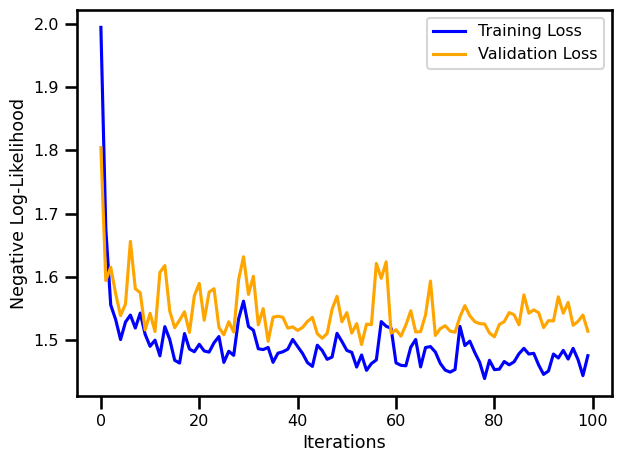
# =========================
# PLOTS
# =========================
# LATENT SPACE
X_trans = gf_model.forward(ds_train[:])
fig = corner.corner(X_trans, color="Red")
# wandb.log({"final_latent_space": wandb.Image(plt)})
plt.show()
plt.close("all")
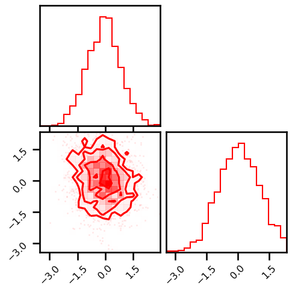
# INVERSE TRANSFORM
X_approx = gf_model.inverse(X_trans)
fig = corner.corner(X_approx, color="green")
# wandb.log({"inverse_space": wandb.Image(plt)})
plt.show()
plt.close("all")
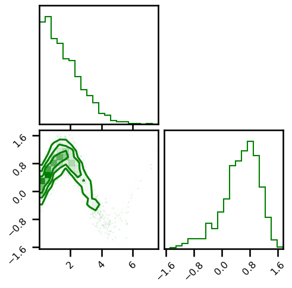
# LOG PROBABILITY
from rbig_jax.data import generate_2d_grid
cmap = cm.magma # "Reds"
X_plot = ds_plot[:]
fig, ax = plt.subplots(figsize=(7, 5))
h = ax.hist2d(
X_plot[:, 0], X_plot[:, 1], bins=512, cmap=cmap, density=True, vmin=0.0, vmax=1.0
)
ax.set(
xlim=[X_plot[:, 0].min(), X_plot[:, 0].max()],
ylim=[X_plot[:, 1].min(), X_plot[:, 1].max()],
xticklabels="",
yticklabels="",
)
plt.tight_layout()
# wandb.log({"original_density": wandb.Image(plt)})
plt.show()
plt.close("all")
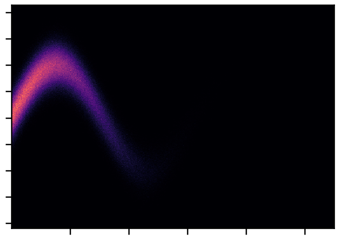
# generate grid points
xyinput = generate_2d_grid(ds_train[:], 500, buffer=0.2)
# calculate log probability
X_log_prob = gf_model.score_samples(xyinput)
X_plot = ds_plot[:]
# Estimated Density
probs = jnp.exp(X_log_prob)
fig, ax = plt.subplots(figsize=(7, 5))
h = ax.scatter(
xyinput[:, 0], xyinput[:, 1], s=1, c=probs, cmap=cmap, vmin=0.0, vmax=1.0
)
ax.set(
xlim=[xyinput[:, 0].min(), xyinput[:, 0].max()],
ylim=[xyinput[:, 1].min(), xyinput[:, 1].max()],
xticklabels="",
yticklabels="",
)
plt.tight_layout()
# wandb.log({"estimated_density": wandb.Image(plt)})
plt.show()
plt.close("all")
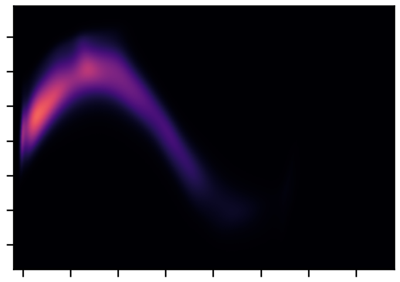
# =======================
# Save Model
# =======================
import joblib
model_save_name = os.path.join(wandb.run.dir, "trained_model.pckl")
joblib.dump(gf_model, model_save_name)
wandb.save(model_save_name)
wandb: WARNING Saving files without folders. If you want to preserve sub directories pass base_path to wandb.save, i.e. wandb.save("/mnt/folder/file.h5", base_path="/mnt")
['/home/emmanuel/code/rbig_jax/jupyterbook/content/experimental/plane/wandb/run-20210427_140431-wtzdttvr/files/trained_model.pckl',
'/home/emmanuel/code/rbig_jax/jupyterbook/content/experimental/plane/wandb/run-20210427_140431-wtzdttvr/files/trained_model.pckl']